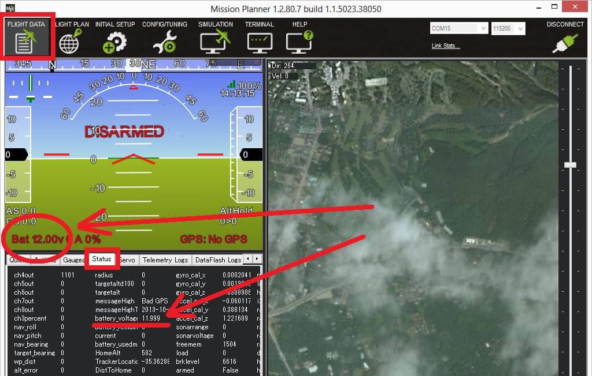
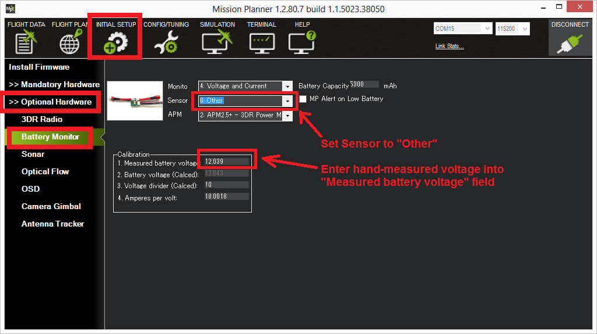
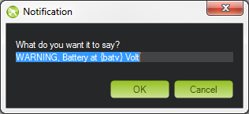
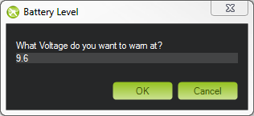
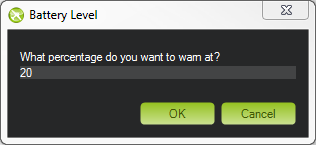

Power Monitor/Module Configuration in Mission Planner¶
Note
Up to 10 battery monitors may be used in ArduPilot, with parameter groups named BATT_ through BATT9_. For this article all parameter name references will be shown for the first monitor, BATT_
A power monitor can be used to measure the battery voltage and current for use in the battery failsafe and a power module can also provide a stable power supply to the autopilot.
ArduPilot is compatible with a number of power modules/monitors.
Note
Boards with integrated power monitors have their parameters setup by default.
Mission Planner Setup¶
Battery measurement is primarily set up in the Mission Planner’s INITIAL SETUP | Optional Hardware | Battery Monitor screen. Note that currently Mission Planner only supports the first two Battery Monitors in the system (a total of 10 are available in firmware versions 4.0 and later). More would need to be configured directly by directly setting their parameters in the CONFIG/TUNING|Full Parameter List screen.
{kind=link}
MissionPlanner: Battery Monitor Configuration¶
Enable voltage and current sensing¶
Enter the properties your monitor can measure, the type of monitor, the type of autopilot, and the battery capacity:
Monitor: Voltage and Current or Battery Volts
Sensor: Supported power module, or “Other”
APM ver: Autopilot (e.g. Pixhawk )
Battery Capacity: Battery capacity in mAh
The Sensor selection list offers a number of analog Power Modules (including popular models from 3DR and AttoPilot) which you can select to automatically configure your module. If your PM is not on the list then you can select Other, enter its recommended values, or perform a manual calibration as described below.
Other Types of Power Modules/Smart Batteries¶
In addition to normal analog voltage and current sensing modules, ArduPilot supports a wide range of SMBus, DroneCAN/CAN power modules and Smart Batteries. (In the following, the first monitor’s parameters are shown. Each of the other monitors have their own parameters.)
These are selected via the BATTx_MONITOR parameter for each battery monitor. These can be set directly via the CONFIG/Parameter Tree tab for each battery monitor. Here are the monitor types supported:
TYPE |
|
|---|---|
0 |
Disabled |
3 |
Analog Voltage Only |
4 |
Analog Voltage and Current |
5 |
Solo |
6 |
Bebop |
7 |
|
8 |
DroneCAN-BatteryInfo |
9 |
|
10 |
Sum Of Selected Monitors, see BATTx_SUM_MASK parameter |
11 |
|
12 |
|
13 |
|
14 |
|
15 |
NeoDesign |
16 |
SMBus-Maxell |
17 |
|
18 |
|
19 |
|
20 |
MPPT |
21 |
INA2XX |
22 |
LTC2946 |
23 |
Torqeedo Motor Controller |
24 |
Note
Once a specific monitor type is selected, parameters associated with that type of monitor will be revealed once parameters are refreshed. Scales and offsets, bus addresses, etc. will be displayed, as appropriate, for that monitor.
Other Parameters¶
BATT_OPTIONS bit 0, if set, will ignore the State Of Charge field in DroneCAN monitors, since some do not populate this field with meaningful data. Also various options for MPPT type monitors are provided. Bit 6 allows the resting voltage to be sent in place of battery voltage, which is sometime more useful.
BATT_SUM_MASK is used if the monitor is type “10” (Sum Of Selected Monitors) to select which monitors’ reported voltages will be averaged, and current values will be summed, and reported for this monitor. Selecting this monitor’s own instance number has no effect. If no bits are set, it will average all lower numbered instance’s reports.
BATT_ARM_VOLT is the minimum voltage reported from this monitor that will allow arming to occur.
BATT_ARM_MAH is the minimum capacity remaining reported from this monitor that will allow arming to occur.
BATT_CURR_MULT allows adjusting the current scale for DroneCAN(UAVCAN) monitors which do not have a CAN parameter exposed for adjustment.
Failsafe¶
Failsafes can be implemented for low battery/fuel conditions. For Plane see Plane Failsafe Function, for Copter see Battery Failsafe, or for Rover see Failsafes
Analog Monitor Calibration¶
The bottom section of the Battery Monitor screen allows you to calibrate the voltage/current measurement in order to verify that the measured voltage of the battery is correct. You can also set the Sensor selection list to Other and use the calibration process to configure an “unknown” power monitor/module.
To calibrate the voltage reading:
Check the voltage of your LiPo battery with a hand-held volt meter or a power analyzer
Connect your Pixhawk-series to your computer and plug in the LiPo battery
Check the voltage through the Mission Planner’s INITIAL SETUP | Optional Hardware | Battery Monitor screen or on the Flight Data screen’s HUD or Status tab.

{kind=link}
If you find the voltage is not correct (i.e. if off from the hand-held volt meter’s reading by more than perhaps 0.2V) you can calibrate it by doing the following:
On Mission Planner’s INITIAL SETUP | Optional Hardware | Battery Monitor screen set the “Sensor” to “Other”.
Enter the voltage according to the hand-held volt meter in the “Measured Battery Voltage” field
Press tab or click out of the field and the “Voltage Divider (Calced)” value will update and the “Battery voltage (Calced)” should now equal the measured voltage

{kind=link}
Using the power analyser you can also measure the current and compare to results displayed in the Mission Planner.
Note
Most current sensors are not very accurate at low currents (less than 3 Amps). Typically you should perform current calibration at around 10A. The exception is PMs that use hall-effect sensors, like those from Mauch.
This video shows the voltage and current calibration process using a Turnigy Power Analyser.
Enable Low Battery Alert¶
You can set Mission Planner to alert you verbally when your battery is low (using a computerized voice).
Simply check the MP Alert on Low Battery checkbox and enter the warning you wish to hear, the voltage level and finally the percentage of remaining current.
  {kind=link}
{kind=link}
{kind=link}
Connecting power monitor to alternative pins¶
The power monitor is generally plugged into the default port on the
autopilot (ie. Pixhawk). If you wish to change where the power
monitor is plugged into the controller, the pins used can be modified
using the BATT_VOLT_PIN and BATT_CURR_PIN parameters.
The list of available analog input pins that can be used are listed on the Hardware Options page for the Pixhawk board or its board description linked from the Choosing an Autopilot page